A phone-first web app that tells a farmer whether to water this week, whether their crop is under stress, and which Kharif → Rabi → Zaid rotation suits their land, water and goals — using NASA POWER, MODIS, SMAP, GPM, GRACE and GEDI data with soil, forecast, terrain and mandi-price data, explained in six interface languages and nine assistant languages.
Every number is produced by documented, testable rules; an AI assistant explains them but does not invent them. The tool supports, and never replaces, the farmer's judgment and local agricultural experts.
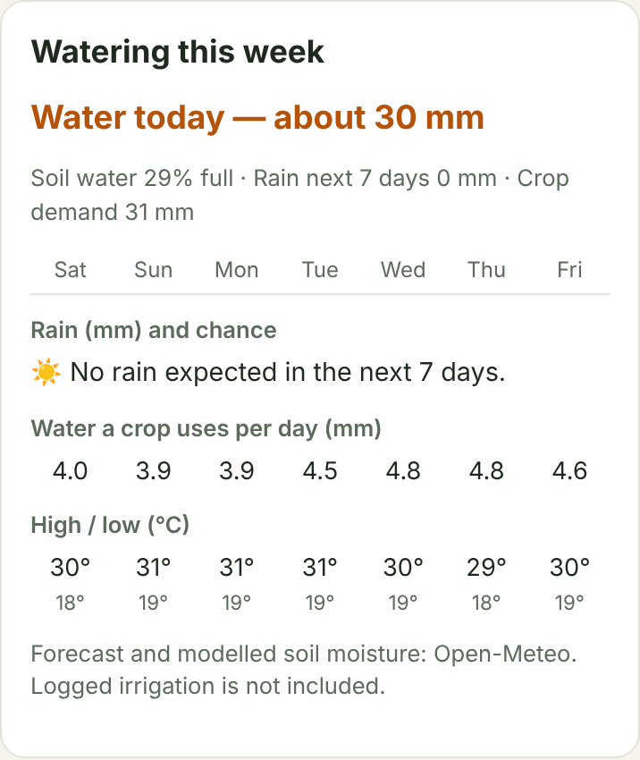
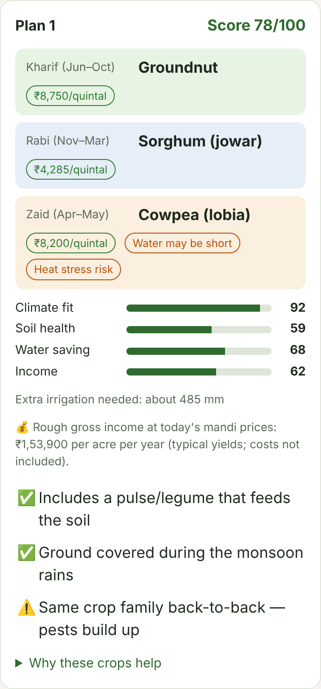
Most Indian farm holdings are small and marginal — 86 % are under 2 hectares (Agriculture Census 2015-16). These farmers make high-stakes decisions about water, crop choice and soil care with little access to the satellite and climate data that could guide them, and almost none of it is offered in their language or in plain terms.
Kisan AI is a working, deployed web application that brings that data to a farmer's phone. For any field in India it combines ten data sources — led by NASA POWER, MODIS, and NASA GIBS layers from SMAP, GPM IMERG, GRACE, GEDI and HLS — with soil maps, weather forecasts, terrain and live mandi prices. From these it produces three practical answers:
A map shows NASA layers over time and field-level zones of erosion risk, water-stress hotspots and frost-prone low spots. An AI assistant (Claude) answers questions in nine languages using the field's computed data. The method is fully documented and covered by 65 automated tests.
A small farmer in Maharashtra, Punjab or Karnataka faces the same questions every season:
NASA and other agencies already observe all of this from space — rainfall, soil moisture, vegetation greenness, temperature, groundwater change — and global soil and terrain maps exist. But this data is:
The challenge is therefore not a lack of data, but the lack of a tool that combines it, translates it into plain decisions in local languages, is honest about its uncertainty, and leaves room for the farmer's own knowledge.
Kisan AI is a free, phone-first web app. A farmer chooses their field (GPS, a tap on the map, or a nearby place) and the app assembles everything known about that point from Earth observation and public data, then answers in plain language.
Design principles
| Challenge theme | What Kisan AI delivers |
|---|---|
| Understanding conditions & data — temperature, soil moisture, rainfall, evaporation, vegetation stress; explain ET, soil-moisture anomalies, NDVI, frost risk, water balance; satellite vs ground | Climate tab links each variable to crop vulnerability (heat, frost, dry Rabi, monsoon dependence). The season timeline relates NDVI declines to soil-moisture anomaly, heat days and rainfall deficit. The Learn tab explains evapotranspiration, soil-moisture anomaly, NDVI, frost risk and water balance in six languages, and how satellite and ground measurements differ and combine. |
| AI, modelling and data fusion — compare approaches, find seasonal transitions, bare periods and stress, interpret uncertainty, harmonise resolutions | Rule-based phase detection on smoothed NDVI (bare, green-up, peak, decline), evidence-fusion rules for stress vs harvest, anomalies vs 30-year normals and past years, and a confidence score. All sources are harmonised to a monthly grid and a 250 m MODIS grid. A methods comparison (rules, anomalies, phenology fitting, random forest, LSTM, LLM) explains the choices. |
| Rotation strategy exploration — nutrient cycling, erosion, organic matter, pest disruption, water, forage, markets; nitrogen-fixing, cover, deep-rooted and drought-tolerant crops | Three rotations scored on exactly these eight criteria, using live mandi prices for income. Each plan explains the role of every crop (nitrogen fixer, cover crop, deep-rooted, drought-tolerant, fodder). Priorities (balanced, income, soil health, save water) reweight the ranking. |
| Geospatial mapping & visualisation — trends over time, field-level vulnerabilities, timelines, overlays, scenario sliders | Map tab with seven NASA GIBS layers (MODIS NDVI, SMAP, GPM IMERG, MODIS LST, HLS, GRACE, GEDI), a date slider and transparency for overlays. A 7×7 grid of 250 m cells shows erosion risk, water-stress hotspots and frost-prone low spots. Season timeline strip, monthly data table, and rainfall/temperature what-if sliders that re-plan rotations. |
| Farmer-centred design — easy to interpret, farmer inputs and constraints, reminders that local expertise matters | Six interface languages, voice input and read-aloud, plain one-line meanings for every number. Inputs: water available, last crop, priority, little labour/no machines, fodder needs, crops to avoid. Field-check and KVK reminders on plans, timeline, zones, the Learn tab and in the assistant's rules. |
Screenshots from the live deployment for a farmland point near Nagpur, Maharashtra, on 14 November 2026.
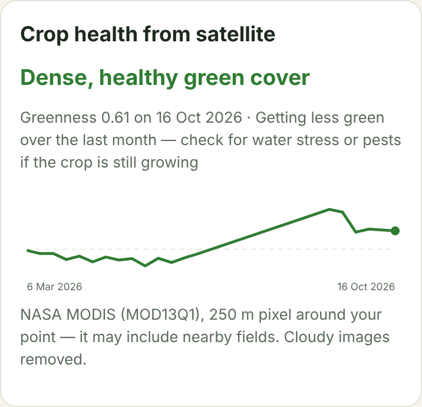
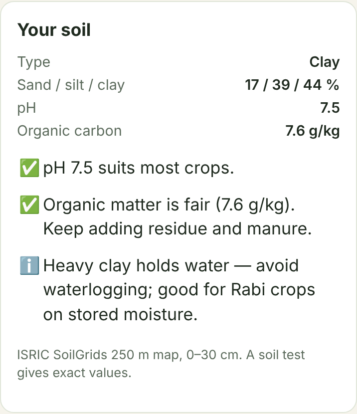
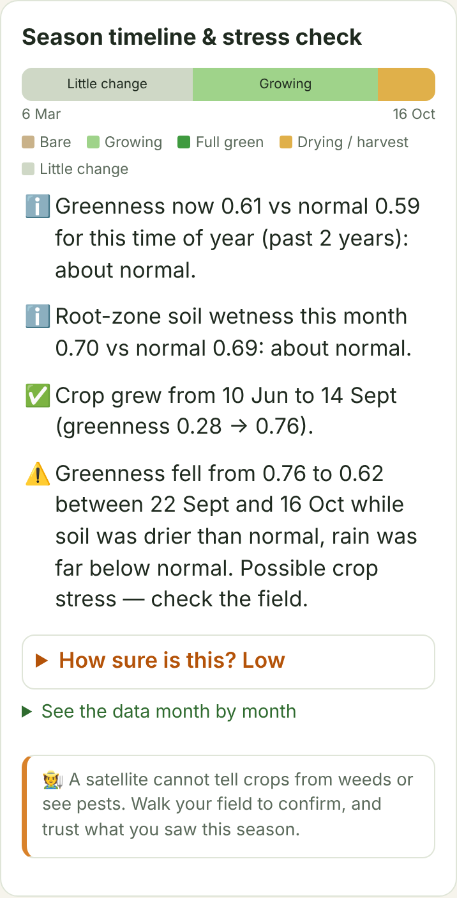
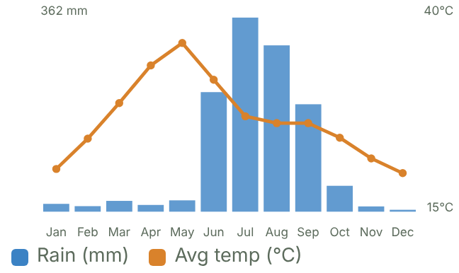
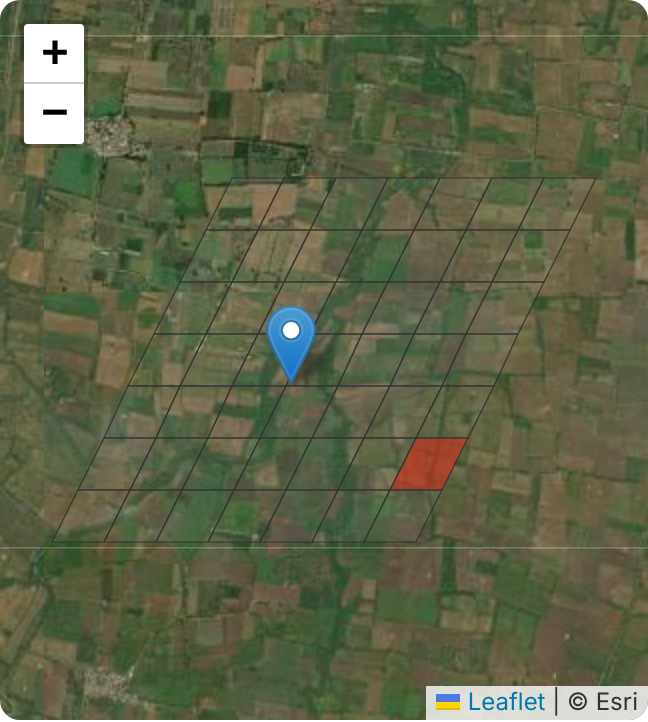
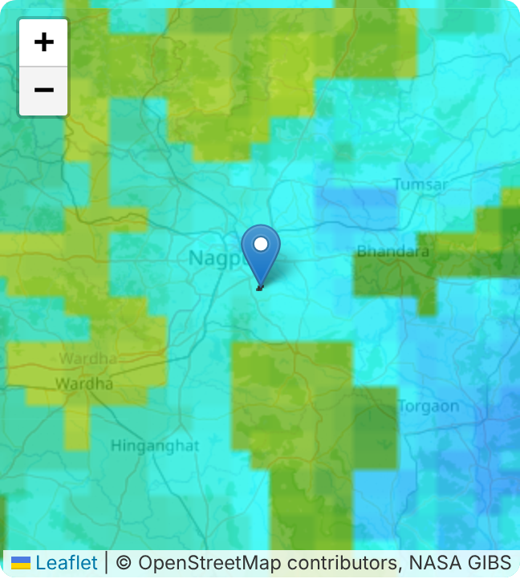
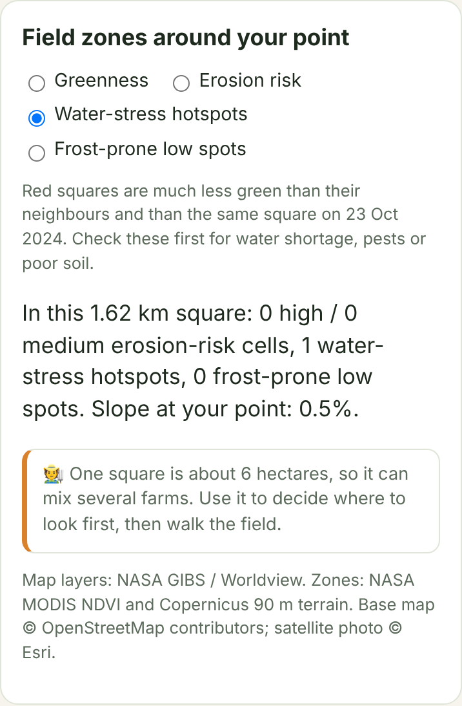
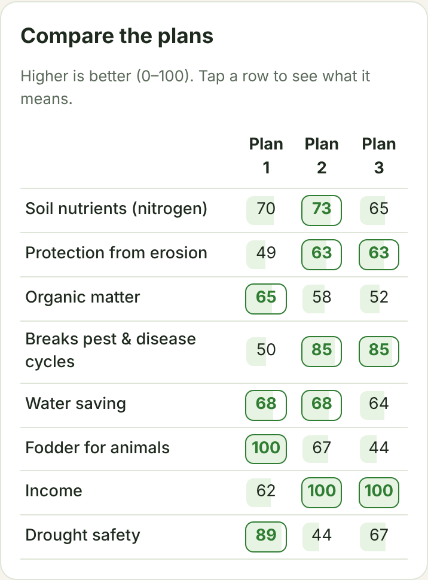
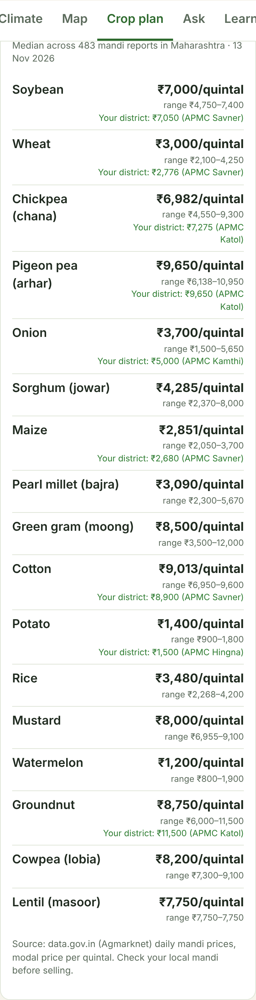
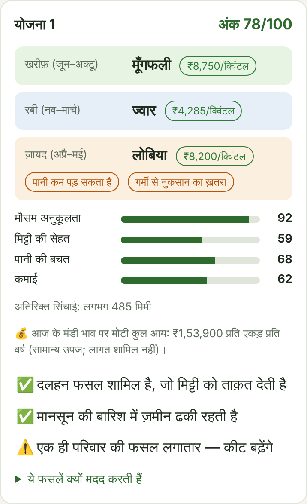
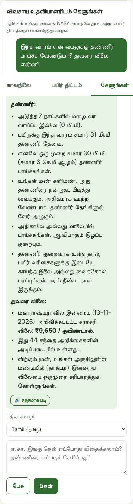
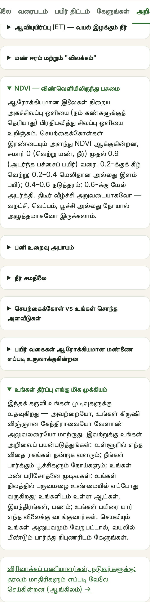
| Tab | Purpose |
|---|---|
| Climate | Watering this week, crop health from satellite, season timeline and stress check, your soil, long-term climate and warnings. |
| Map | Tap to choose the field; NASA layers with date slider and transparency; erosion, stress and frost zones. |
| Crop plan | Farmer inputs and constraints, what-if sliders, three rotations, eight-criteria comparison, crop roles, mandi prices. |
| Ask | AI assistant in nine languages with voice input and read-aloud, grounded in the field's computed data. |
| Learn | Plain explanations of the science and where local expertise matters. |
| Dataset | Variables used | Resolution | Time step | Role in the app |
|---|---|---|---|---|
| NASA POWER climatology (MERRA-2, bias-corrected rain) | T2M, T2M_RANGE, T2M_MAX/MIN, PRECTOTCORR, RH2M, ALLSKY_SFC_SW_DWN, GWETROOT, EVPTRNS | ~50 km | 30-yr monthly normals | Seasons, frost/heat warnings, crop fit, normals for anomalies |
| NASA POWER daily | PRECTOTCORR, T2M_MAX/MIN, GWETROOT, EVPTRNS | ~50 km | Daily, ~3-day lag | Timeline, water balance, soil-moisture anomaly |
| NASA MODIS MOD13Q1 + MYD13Q1 v061 (Planetary Computer COGs) | 250m_16_days_NDVI, pixel_reliability | 250 m | 8-day (Terra + Aqua) | Crop health, phases, stress, past-year anomaly, zone grid |
| NASA GIBS: SMAP L4, GPM IMERG, MODIS LST, HLS, GRACE, GEDI, MODIS NDVI | Map layers | 30 m – 300 km | Daily – static | Map overlays over time |
| ISRIC SoilGrids 2.0 | Clay, sand, silt, pH, organic carbon (0–30 cm) | 250 m | Static | Texture, water holding, pH fit, soil advice |
| Open-Meteo forecast | Rain, rain chance, FAO-56 ET₀, temperature, soil moisture 0–27 cm | 1–11 km | 7-day | Watering advice |
| Copernicus DEM GLO-90 (via Open-Meteo) | Elevation | 90 m | Static | Slope, erosion, frost pockets |
| data.gov.in Agmarknet daily mandi prices | Modal / min / max ₹ per quintal, market, district | Market | Daily | Income criterion, prices card |
| OpenStreetMap Nominatim | State, district | Admin areas | Static | Choosing the right mandis |
| OpenStreetMap tiles, Esri World Imagery | Base maps | — | — | Map background |
Each data source is fetched independently with a timeout and cached; if one fails, the app names it and shows the rest. Keys are kept on the server. Only three libraries are used: Express, the Anthropic SDK and geotiff.js (Leaflet for the map, loaded on demand).
All thresholds below are those in the deployed code. Full details are in docs/DOCUMENTATION.md.
The field's latitude/longitude is projected to the MODIS sinusoidal grid (x = R·λ·cosφ, y = R·φ, R = 6 371 007 m) to find the tile and the 250 m pixel. STAC search finds Terra and Aqua composites for the last 8 months; only that pixel is read from each cloud-optimised GeoTIFF. Pixels flagged snow, cloud or no-data are dropped. Status: < 0.2 bare, < 0.4 sparse, < 0.6 moderate, else dense.
The NDVI series is smoothed (3-point median, then 3-point mean). Each reading is labelled bare (< 0.25), green-up (rise ≥ 0.03), decline (fall ≥ 0.03), peak (≥ 0.45) or steady. Consecutive labels form segments; changes smaller than 0.08 — the noise level of an 8-day 250 m composite — are merged into their neighbours.
| Stress signal in the same months | Shape: from ≥ 0.40 to ≤ 0.35 | Finding |
|---|---|---|
| Soil-wetness anomaly ≤ −0.05, or ≥ 5 days ≥ 38 °C, or rain ≤ −40 % of normal | No | Possible stress — causes listed, "check the field" |
| Yes (as above) | Yes | Harvest, or stress if the crop was still growing |
| None | Yes | Likely harvest |
| None | No | Unexplained — harvest, pests or disease |
NDVI anomaly: latest value minus the mean of clear readings ±12 days around the same date in up to three previous years (≤ −0.10 below normal). Soil-moisture anomaly: this month's NASA POWER GWETROOT minus its 30-year normal. Confidence starts at 3 points and loses points for no recent clear image (−2), only 1–2 recent images (−1), a cloud gap over 40 days (−1), no past-year images (−1), or no soil normal (−1): ≥ 3 high, 2 medium, ≤ 1 low. Coarse pixel size is always stated.
Each crop gets up to 100 points per season: temperature fit (40; rejected if the season mean is more than 5 °C outside its range), water fit (40; available water = 70 % of rain + monsoon soil-water carry-over for Rabi + irrigation; rejected below half its need) and value (20), minus penalties for heat above its limit, frost, soil pH outside its range, and hand-labour-heavy crops when the farmer has little labour. Monsoon carry-over = min(200, (Kharif rain − 400)·0.4·f), where f scales with the soil's water-holding capacity.
Claude receives a compact summary of the field's computed data — climate, soil, soil moisture, watering advice, NDVI and timeline findings with confidence, the current plan and today's mandi prices — and answers in the chosen language. Its instructions: plain words, low-cost steps first, base claims on the provided NASA data, never invent prices or subsidies, recommend integrated pest management and the KVK for chemical doses, state how certain coarse satellite data is, and ask the farmer to confirm in the field.
The datasets span 30 m to 300 km and half-hourly to static. Kisan AI aligns them on two common analysis grids and keeps track of the original resolution so it can report uncertainty.
| Approach | Finds | Needs | Explainable | Status |
|---|---|---|---|---|
| Rule-based thresholds on smoothed NDVI | Bare, green-up, peak, decline | Time series only | Yes | used |
| Anomalies vs climatology and past years | Drier / less green than usual | History of the place | Yes | used |
| Evidence-fusion rules | Stress vs harvest with causes | Harmonised grid | Yes | used |
| Harmonic / double-logistic phenology | Season start and end dates | Several years of NDVI | Mostly | next |
| Random forest / gradient boosting | Crop type, stress class, yield risk | Labelled fields | Partly | needs ground truth |
| LSTM / transformer | Complex seasonal patterns | Large labelled data | Weak | not suitable yet |
| Large language model (Claude) | Explanations in 9 languages | Computed context | Explains only | used |
Explainable rules were chosen because no labelled ground truth exists yet for these fields and every result must be explainable to a farmer in one sentence. Supervised models become possible once KVK field data is collected (see Roadmap).
The planner searches every Kharif × Rabi × Zaid combination of the best candidate crops for the field (about 300 combinations), treats the rotation as repeating year to year, and scores each on eight criteria (0–100):
| Criterion | How it is measured |
|---|---|
| Nutrient cycling | + for legumes; + when a legume precedes a heavy feeder; − for two heavy feeders in a row |
| Erosion protection | Ground cover in each season weighted by that season's share of annual rain; extra risk for digging harvests; field slope from the DEM |
| Organic matter | Crop residue, green manure and deep roots |
| Pest-cycle disruption | Penalty for the same crop family back-to-back; bonus for three or more families or a fallow break |
| Water use | Irrigation needed beyond normal rain |
| Forage potential | Straw, stover, haulm and green fodder value |
| Market / income | Today's mandi modal price × typical yield (₹ per acre per year) |
| Drought safety | Drought tolerance of the crops |
| Priority | Climate fit | Soil health* | Water | Income | Drought |
|---|---|---|---|---|---|
| Balanced | 0.35 | 0.25 | 0.15 | 0.15 | 0.10 |
| Income | 0.30 | 0.15 | 0.10 | 0.40 | 0.05 |
| Improve soil | 0.30 | 0.45 | 0.10 | 0.10 | 0.05 |
| Save water | 0.30 | 0.15 | 0.35 | 0.10 | 0.10 |
*Soil health = mean of nutrients, erosion, organic matter and pest criteria. Fodder gets weight 0.15 when the farmer needs it; in a drier what-if year drought safety gains up to 0.4. The three best plans that differ in at least two seasons are shown.
| Source of uncertainty | How the app handles it |
|---|---|
| Pixel size: 250 m (~6 ha) satellite, ~50 km weather model | Stated on every timeline; zones described as "where to look first", not plant-level detail |
| Monsoon clouds hide the field | Cloudy pixels removed; confidence lowered for few images or long gaps, with the reasons listed |
| Model estimates (soil moisture, ET) and prediction maps (soil) | Labelled as models; the Learn tab explains why a soil test or rain gauge is better for the exact field |
| Archive gaps | Past-year comparison falls back up to three years; skipped and flagged if none |
| Prices and yields | One day's mandi reports, outliers removed; typical yields; income shown as rough gross, costs excluded |
| Points inside towns or on water | Soil searched up to ~30 km away with distance shown, or a clear message to pick a field point |
| Place | What the app found | Agrees with known agronomy? |
|---|---|---|
| Near Nagpur (black clay soil) | 43 % clay, pH 7.4; Kharif green-up June–September; October decline with dry soil and rain 83 % below normal; water now ~30 mm | Yes — Vidarbha black cotton soils; dry post-monsoon October |
| Delhi farmland | Monsoon supplies 85 % of rain; bare fields April–June; alkaline soil (pH ~7.9); frost occasional | Yes — summer fallow before Kharif |
| Near Ludhiana | March–April decline (wheat harvest); greenness 0.16 below normal in early October; paddy ₹2,461/q in Punjab mandis | Yes — rice–wheat system, paddy near MSP |
| Kodagu hills | 31 of 49 cells medium/high erosion risk; slopes up to 11 % | Yes — Western Ghats slopes |
Expected benefits
Running cost
Impact will be measured in a pilot: irrigations saved per season, share of farmers adopting a legume or cover crop, and farmer-reported usefulness, compared with KVK records.
| Risk | Mitigation |
|---|---|
| Wrong advice from coarse or cloudy data | Confidence levels, reasons and field-check reminders; advice phrased as suggestions; KVK validation before scale-up |
| Rule thresholds not suited to every region | Thresholds and crop parameters kept in one documented table for KVK tuning per agro-climatic zone |
| Data service outages or rate limits | Independent sources, caching, clear "unavailable" messages, alternative sources (e.g. MODIS via Planetary Computer) |
| Translation errors | One file per language for native-speaker review; automated checks for missing text |
| AI assistant inventing facts | Grounded in computed context; forbidden from inventing prices or schemes; told to state uncertainty; refusals handled |
| Connectivity in rural areas | Light pages, progressive loading; offline mode on the roadmap |
| Phase | Deliverables |
|---|---|
| Now live | All features described in this proposal, deployed and tested. |
| Month 1–2 | NASA Earthdata integration: SMAP L4 and GPM IMERG as daily numbers per field, ECOSTRESS 70 m ET and land-surface temperature for within-field water stress, GEDI biomass — fused on the same grids. Native-speaker review of all languages. |
| Month 3–4 | Farmer logs: rain gauge, irrigation and soil-test results, used to correct model values per field. Phenology curve fitting for sowing and harvest dates. Offline support. |
| Season pilot | With one or two KVKs: validate stress findings and rotation advice on real fields; tune thresholds per zone; measure water saved and adoption. |
| After the pilot | Train supervised models on the labelled pilot data; add more crops and states; partner with state agriculture departments and farmer producer organisations. |